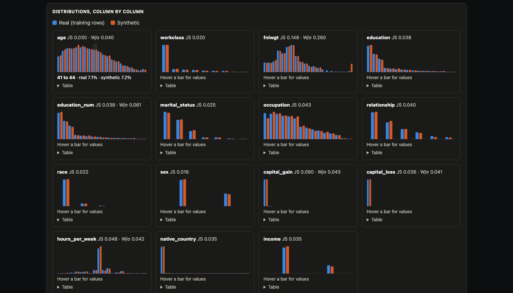
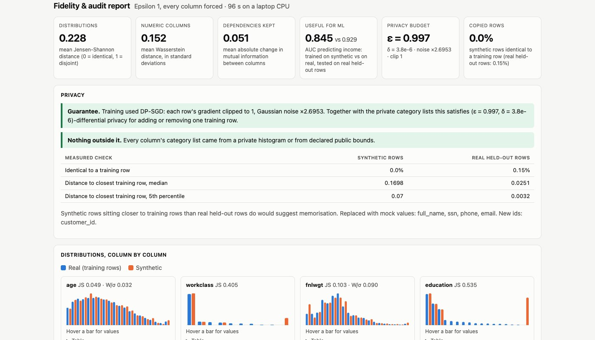
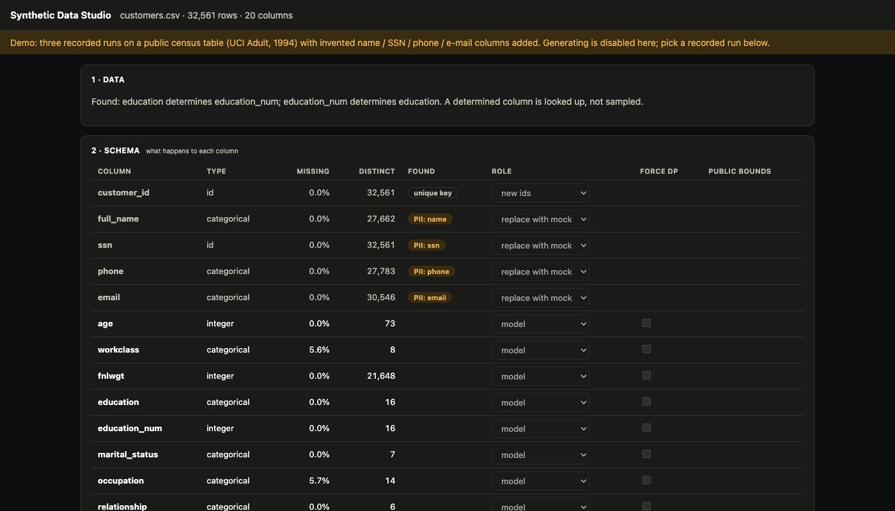

Python · ML privacy · 2026-10
How Private Can Useful Synthetic Data Be?
A generator that masks identifiers, learns a private table with a neural network and writes a fake copy with the same statistics. On 32,561 census rows a model trained on the copy scores 0.880 AUC against 0.929 for the real data; with a differential-privacy guarantee of ε = 1, 0.845.

The blueprint asked for data that “bypasses” GDPR and HIPAA. This does not claim that. Synthetic data is not automatically outside privacy law; a differential-privacy guarantee is evidence for a legal assessment, not a replacement for one. By default part of each run sits outside the guarantee, and every report says which part. The census columns are real public data (UCI Adult, 1994); the name, SSN, phone and e-mail columns were invented for the demonstration. Results are single runs with one seed.
01 — The problem
Teams that build machine-learning models want realistic data; the realistic data is customer records they are not supposed to pass around. One answer is a synthetic copy: invented rows that keep the statistical shape of the real table (older people earn more, managers work longer hours) without being anyone's record. Two things can go wrong: the copy is too rough to be useful, or it is so faithful that it memorises real people. How much usefulness is left at each level of privacy protection, and can a report show that honestly?
Fourth of four product blueprints built as a minimum version.
02 — What I built
A Python pipeline with a web studio.
- Profiler: types, missing values, keys, and which columns depend on which.
- PII masking: patterns plus named-entity recognition find identifier columns; they are replaced with mock values and never reach the model.
- Generative model: a variational autoencoder in PyTorch, optionally trained with differential privacy.
- Fidelity and audit report: real against synthetic, column by column and pair by pair, plus measured privacy checks.
- Studio: drop a CSV, set each column's role, flag “Force DP” per column, choose ε, generate, download.
03 — How it was built
- 01
Profile the table
For each column: its type, share missing, number of distinct values, range and most common values. Between columns: Pearson correlation for numbers, and mutual information for every pair, which also works for categories (0 means unrelated, 1 means one fixes the other). It found that
educationfully determineseducation_num; such a column is looked up after generation instead of sampled, so the rule holds in every synthetic row.constraints += [{"type": "functional_dependency", **fd} for fd in functional_dependencies(df, modeled)] - 02
Take identifiers out before any model sees them
A column is flagged by its header, by the share of values matching a pattern (SSN, e-mail, phone, card number with checksum), or by spaCy recognising person names. Flagged columns are not trained on. The output gets mock values from a generator that is never shown the real ones, in ranges reserved for fiction: SSNs starting 900, phones 555-01xx,
example.com. A test plants distinctive real identifiers and checks none appears in the output."ssn": re.compile(r"\b(?!000|666|9\d\d)\d{3}-(?!00)\d{2}-(?!0000)\d{4}\b"), - 03
Turn every column into categories, and say what that reveals
Each column becomes one categorical variable: its categories, or for numbers the exact frequent values plus quantile bins. That list of categories and bin edges is read from the data, which a privacy guarantee on the model does not cover: a job title held by one person would appear in the output. So a column can be flagged Force DP: its category list then comes from noisy counts, keeping only categories above a threshold, and a numeric column needs public bounds typed in. A test runs 300 random seeds and checks a one-person category is never released.
threshold = 1 + math.log(1 / (2 * delta)) / epsilon - 04
Train a generator, with a privacy budget
A variational autoencoder squeezes each row into 24 numbers and learns to rebuild it; new rows come from decoding random numbers. With ε set, training uses DP-SGD through Opacus: each row's influence on a training step is clipped, random noise is added, and an accountant adds up how much any single person could have changed the model. That total is ε: smaller means more noise and more protection.
net, optimizer, loader = engine.make_private_with_epsilon( - 05
Score the copy against rows the model never saw
20% of rows are held out. The report gives, per column, the Jensen-Shannon and Wasserstein distances between real and synthetic; how well dependencies between columns survive; and a usefulness test: train a classifier on synthetic rows, test it on real held-out rows. Two privacy measurements compare synthetic rows with the held-out real ones: how many are identical to a training row, and how close each sits to its nearest training row.
dcr_s, dcr_h = closest_record(sy, tr, categorical), closest_record(ho, tr, categorical)
04 — Results
Three runs on 32,561 census rows (26,051 for training, 6,510 held out). AUC is for predicting income above $50K, tested on real held-out rows; a model trained on the real rows scores 0.929.
| Run | JS dist. | MI change | AUC |
|---|---|---|---|
| No DP | 0.046 | 0.014 | 0.880 |
| ε = 8 | 0.044 | 0.024 | 0.870 |
| ε = 1, strict | 0.228 | 0.051 | 0.845 |
JS distance: how far each column's distribution moved (0 = identical). MI change: how much the links between columns changed. Lower is better for both.
Privacy, measured. In all three runs no synthetic row was identical to a training row (0.15% of real held-out rows are), and synthetic rows sit farther from the training data than fresh real rows do (median distance 0.047, 0.071 and 0.170 against 0.025). The four identifier columns were replaced and the key regenerated.
What the guarantee costs. At ε = 8 the single-column shapes hold and one AUC point is lost, but 15 columns' category lists were read from the data, outside the guarantee, and the report says so. The strict run closes that gap and pays for it: with a tenth of ε shared by nine private category lists, a category needs roughly 1,500 rows to be kept, so education keeps 3 of its 16 values and native_country only “United-States”. The classifier still reaches 0.845.


Checks. 19 automated tests cover 96% of the code and pass inside the Docker image. Training takes 26 seconds without DP and about 100 seconds with it on a laptop CPU.
05 — What I'd do next
- Let users declare special values (such as 0) for bounded numeric columns: the strict run blurs the 92% of zeros in capital gains.
- Compare against marginal-based DP methods, which usually beat neural models at small ε, and average over several seeds.
- Multi-table data with foreign keys, and a text generator for free-text columns (today they are dropped).